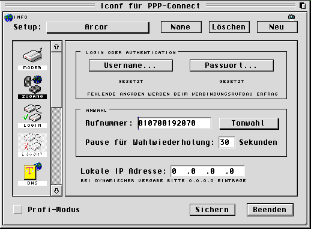
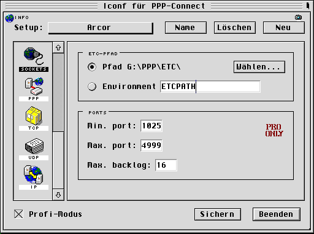

|
|
23.2 IConnect
Internetzugang mit ASH IConnect
Ein Internetzugang mit IConnect, oder PPP, von ASH ist relativ
schnell und einfach Eingerichtet. Daher gibt es hier auch keine
großartigen Tips wie man IConnect installiert. Befolgen Sie
einfach die Installationsanweisungen und stellen Sie ihre
persönlichen Parameter anhand der Bilder ein.
 Abbildung 1 - sehr wichtige Parameter
Abbildung 2 - Modemparameter
Von den Einstellungen die sich hinter dem "Profi-Modus"
verbergen lassen sie zunächst am besten die Finger, benutzen Sie
die Voreinstellungen. Ändern Sie hier nur Parameter wenn Sie
genau wissen was Sie da machen. Später können Sie ein wenig
mit dem "MTU"-Parameter experimentieren um die höchst
mögliche Transfergeschwindigkeit zu erreichen. Bewegen Sie sich
aber hier immer zwischen "567" und maximal "1500".
Beachten Sie bitte das IConnect alle geänderten Parameter
erst nach einem Neustart benutzen wird.
 Abbildung 3 - eine Pfadeinstellung
Zumindest hat dieser Trick alle meine Probleme bis einschliesslich
Release 1.7 bisher immer behoben. Es spart einfach das sinnlose Testen
und das verschwenden von Telefoneinheiten.
|

|
|